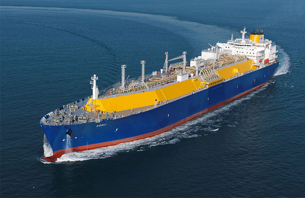
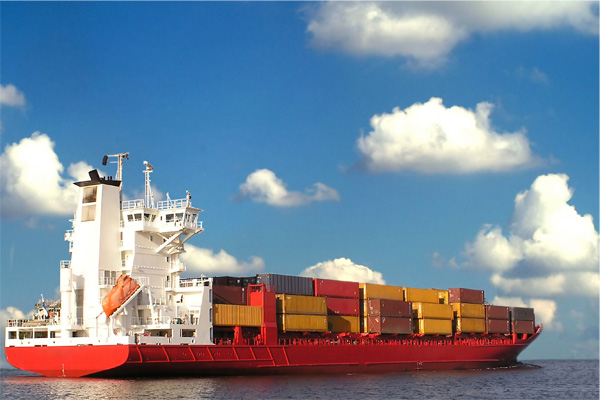
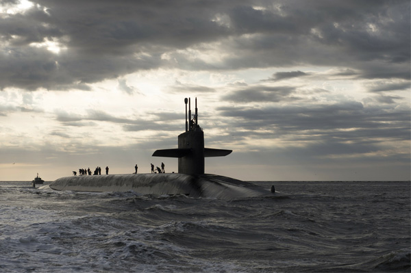
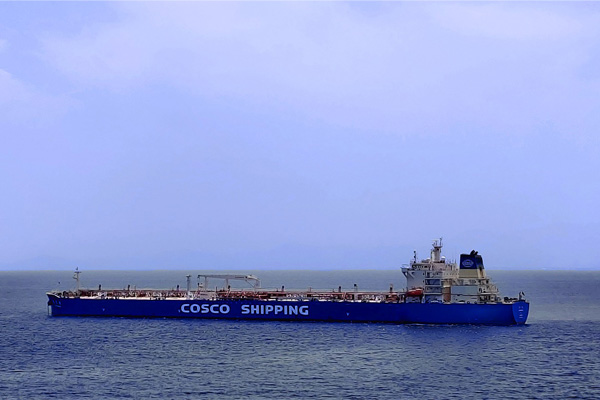

상선/특수선
하드웨어와 소프트웨어의 파괴적 혁신을 통해 세계 최고의 기술과 경쟁력을 자랑합니다.

- LNG 운반선
- 대우조선해양이 독자적으로 개발한 LNG연료시스템 (FGSS)과 ‘천연가스 재액화 장치(PRS)’ 등 LNG관련 기술 우위를 바탕으로 세계 최고 경쟁력을 보유하고 있습니다.

- 컨테이너선
- 2011년 세계 초대형 컨테이너 화물선 머스크 트리플-E를 18,000 TEU 20척을 수주 한 이래, 지속적인 기술개발로 세계 초대형 컨테이너선 시장을 선도해오고 있습니다..

- 잠수함
- 수 많은 창정비 사업을 수행하면서 독자 기술을 개발해 왔습니다. 또한 3,000톤급 차세대 KSS-III 사업을 수행하면서, 독자적인 잠수함 설계 및 건조 역량을 증명했습니다.

- 유조선
- 세계에서 운항중인 초대형 유조선 (VLCC : Very Large Crude oil Carrier) 건조 척수 기준으로 세계 1위(점유율 약 18%)를 유지하고 있으며, 수주잔량 기준으로도 세계 1위를 기록하고 있습니다.(‘18년 1월 기준)